Dialogs Static
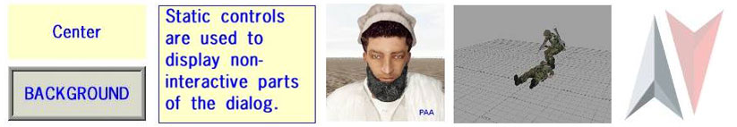
Introduction
Static controls are used to display non-interactive parts of the dialog (i.e. they cannot be clicked, or text cannot be entered or changed).
This can be text, lines, an image or video, or just a background color.
Related commands: Interactions - User Dialogs - General
Text
Single lines
Single lines of text can be displayed in different horizontal alignments, and with different background styles. See the properties and examples below.
Multiple lines
To display multiple lines, the style ST_MULTI (16) has to be used. It can be combined with other styles (e.g. alignment, background) by adding them: style = ST_MULTI + ST_CENTER. In addition, the 'lineSpacing' property has to be defined.
Any line that's wider than the control will automatically be broken up between words. To manually insert a line break, use "\n" at the appropriate position.
The control will receive a single-line border (in the foreGround color), which can be suppressed via the ST_NO_RECT style.
If the text is larger than the control's area, it can be scrolled into view via the cursor keys (no scrollbar or mouse wheel functionality).
Demo mission: Dialog Static.zip
Images
Images can be displayed via the ST_PICTURE style.
The formats supported are JPG or PAA, but be aware that resized JPGs will become rather blurry, so it is better to use PAA for those situations.
The width & height of an image must be an exponential value of 2 (e.g. 32, 128 or 256 -> 2^n). Thus, a size of 256x256 or 512x256 would be possible, but not 500x300 or 64x50.
Transparent sections of PAA images will be retained, and any underlying dialog elements (or the regular first-person view) will be visible through those sections.
The foreGround color property can be used to "tint" images, and control their transparency. The color is only applied to the visible part of the image (i.e. not to transparent areas in PAA images).
Unless the style option ST_KEEP_ASPECT_RATIO is used, the image will be resized to fill the whole control area (w & h).
Related commands: Interactions - User Dialogs - Images
Demo mission: Dialog Static.zip
Videos

Videos in OGV format can be displayed via the ST_PICTURE style.
They need two additional properties: "autostart", which must be set to true, and "loops", which has to be at least 1.
Once the video has finished, nothing will be visible in the control anymore. Another video can be started at this point via ctrlSetText. If no video was specified in the first place (text=""), then ctrlSetText can be used to load and start the video at a specified time after the dialog has been opened (e.g. once the user presses a "Play" button).
A playing video cannot be stopped. Assigning "" to the text property has no effect, and the only way to abort it is to exit the dialog (if the video has an audio track though, that will keep playing until its end, even if the dialog is closed).
Demo mission: Dialog Video.zip
Lines
Single-pixel lines can be drawn via the ST_LINE style.
The line starts at the position specified by the x & y property. The end position is defined via the w & h values (they will be added to the x & y definitions). Therefore, positive values will go right and down, and negative values will go left and up.
Demo mission: compassHUD.zip
Properties
Only properties unique to this control type are listed. For general properties, see the Properties page.
|
Name |
Type |
Required |
Remark |
Script |
|
type |
Yes |
Control type: 0 (or CT_STATIC, if using constants) |
n/a |
|
|
style |
Yes |
Display options:
|
n/a |
|
|
angle |
No |
Initial rotation angle (0=up). Only needed when ctrlSetAngle. |
||
|
autoplay |
(Yes) |
When displaying videos, this must be set to true. (If set to false, video will never start, or even be shown.) |
n/a |
|
|
blinkingPeriod |
No |
Flashes the control (text & background) once per period specified (in seconds). Visibility change is not absolute (on/off), but instead cycles through the alpha values specified in the control's colors, down to 0, and then back to the default. |
n/a |
|
|
centerU |
(No) |
Rotation axis in X. Only needed when ctrlSetAngle. |
n/a |
|
|
centerV |
(No) |
Rotation axis in Y. Only needed when ctrlSetAngle. |
n/a |
|
|
colorBackground |
Yes |
Background color. Solid color filling the whole control area. |
||
|
colorText |
Yes |
Foreground color. |
||
|
lineSpacing |
(No) |
Space between lines. Required if style was set to ST_MULTI. |
|
|
|
loops |
(No) |
When displaying videos, this is required, and defines how often the video will be played before closing. |
n/a |
|
|
shadow |
No |
Creates a black drop-shadow. Only has an effect in V2.0+, where it replaces the ST_SHADOW style. |
n/a |
|
|
text |
Yes |
Text, image or video to display. Sub-folders in the mission folder can be used (e.g. "images\pic1.jpg"). |
Event Handlers
As static controls are non-interactive, the only Reference List than can be assigned to them are for visibility and destruction.
To determine whether a static control has been clicked (e.g. an image), it has to be overlaid with either a button or active text control. See the Dialogs Button article for examples.
Examples
The mission Dialog Static.zip contains a demonstration of all of the styles shown below.
Single line of text
Open with createDialog "Dlg"
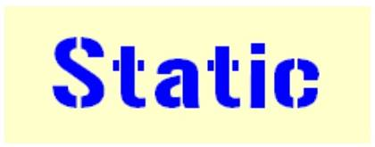class Dlg { idd = -1; movingEnable = true; class controls { class TEXT { type = 0; // CT_STATIC style = 2; // ST_CENTER idc = -1; x = .3; y = .4; w = .4; h = .2; text = "Static"; colorBackground[] = {1, 1, 0, .2}; colorText[] = {0, 0, 1, 1}; font = "GunPlay48"; sizeEx = .16; }; };
Style: ST_TITLE_BAR
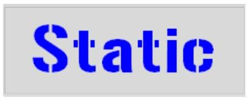[...] style = 32+2; // ST_TITLE_BAR + ST_CENTER [...]
Style: ST_FRAME
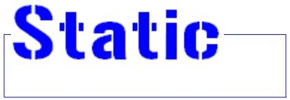[...] style = 64; // ST_FRAME [...]
Style: ST_BACKGROUND
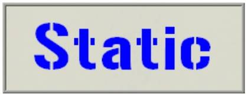[...] style = 80+2; // ST_BACKGROUND + ST_CENTER [...]
Style: ST_GROUP_BOX
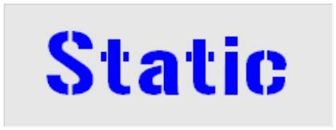[...] style = 96+2; // ST_GROUP_BOX + ST_CENTER [...]
Style: ST_GROUP_BOX2
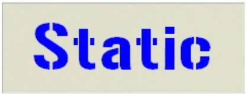[...] style = 112+2; // ST_GROUP_BOX2 + ST_CENTER [...]
Style: ST_HUD_BACKGROUND
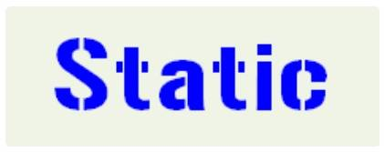[...] style = 128+2; // ST_HUD_BACKGROUND + ST_CENTER [...]
Style: ST_WITH_RECT
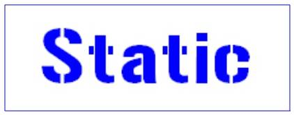[...] style = 160+2; // ST_WITH_RECT + ST_CENTER [...]
Style: ST_SHADOW
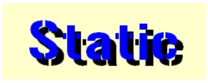[...] style = 256+2; // ST_SHADOW + ST_CENTER [...]
Multi-line text
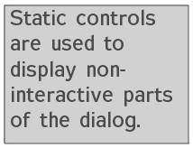class Dlg { idd = -1; movingEnable = true; class controls { class TEXT { type = 0; // CT_STATIC style = 16; // ST_MULTI idc = -1; x = .4; y = .4; w = .2; h = .2; colorBackground[] = {.1, .1, .1, .2}; colorText[] = {.3, .3, .3, 1}; font = "TahomaB"; sizeEx = .037; text = "Static controls are used to display non-\ninteractive parts of the dialog."; lineSpacing = 1; }; }; };
Image

class Dlg { idd = -1; movingEnable = true; class controls { class IMG { type = 0; // CT_STATIC style = 48+2048; // ST_PICTURE + ST_KEEP_ASPECT_RATIO idc = -1; x = .4; y = .4; w = .2; h = .2; text = "man.jpg"; colorBackground[] = {}; colorText[] = {}; font = ""; sizeEx = .1; }; };
Colored and transparent images
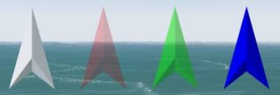class Dlg { idd = -1; movingEnable = true; class controls { class IMG { type = 0; // CT_STATIC style = 48+2048; // ST_PICTURE + ST_KEEP_ASPECT_RATIO idc = -1; x = .1; y = .4; w = .4; h = .2; text = "dart.paa"; // the same image is used four times colorText[] = {}; // original color colorBackground[] = {}; font = ""; sizeEx = .1; }; class IMG1 : IMG { x = .2; colorText[] = {1,0,0,.25}; // 25% opaque, and tinted red }; class IMG2 : IMG { x = .3; colorText[] = {0,1,0,.5}; // 50% opaque, and tinted green }; class IMG3 : IMG { x = .4; colorText[] = {0,0,1,1}; // 100% opaque, and tinted blue }; }; };
Lines
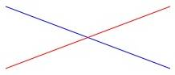class Dlg { idd = -1; movingEnable = true; class controls { class LINE { type = 0; // CT_STATIC style = 2+176; // ST_LINE idc = -1; x = 0.4; // line from upper left to lower right y = 0.4; // start at [0.4,0.4] w = 0.2; // end at [0.6,0.5] ([0.4+0.2, 0.4+0.1]) h = 0.1; text = ""; colorBackground[] = {}; colorText[] = {0,0,1,1}; // blue font = "GunPlay48"; sizeEx = .1; }; class LINE1 : LINE { y = .5; // line from lower left to upper right, start at [.4,.5] h = -.1; // end at [.6,.4] ([.4+.2,.5-.1]) colorText[] = {1,0,0,1}; // red }; }; };
Video
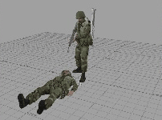class Dlg { idd = -1; movingEnable = true; class controls { class IMG { type = 0; // CT_STATIC style = 48+2048; // ST_PICTURE + ST_KEEP_ASPECT_RATIO idc = -1; x = .4; y = .4; w = .2; h = .2; colorBackground[] = {}; colorText[] = {}; font = ""; sizeEx = .1; text = "video\carryInjured.ogv"; autoplay = true; loops = 2; }; }; };
Modifying content
In order to modify content of static controls, the display and control need to have a unique id number. Once that is ensured, many of the control's properties can then be manipulated via scripts.
Description.ext
class Dlg { idd = 10500; // idd number used to reference display movingEnable = true; class controls { class TEXT { type = 0; // CT_STATIC style = 2; // ST_CENTER access = 3; idc = 10500; // idc number used to reference control x = .3; y = .4; w = .4; h = .2; text = ""; colorBackground[] = {1, 1, 0, .2}; colorText[] = {0, 0, 1, 1}; font = "GunPlay48"; sizeEx = .16; }; }; };
dialog.sqf (Script that opens and modifies the dialog)
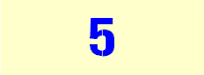createDialog "Dlg"; // open dialog waitUntil {dialog}; _display = findDisplay 10500; // get the display and control objects _control = _display displayCtrl 10500; waitUntil { // loop until dialog is closed for "_i" from 5 to 0 step -1 do { // count up, and update the text property via the dialog control _control ctrlSetText str _i; sleep 1; }; for "_i" from 0 to 4 do { // count down, and update the text property via the control's IDC number ctrlSetText [10500,["one","two","three","four","five"] select _i]; sleep 1; }; !dialog };